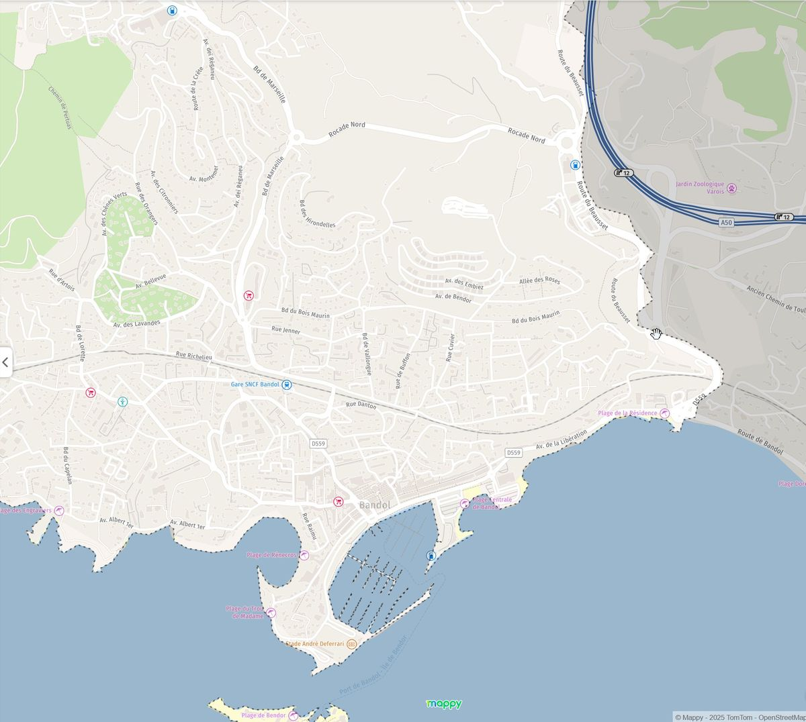
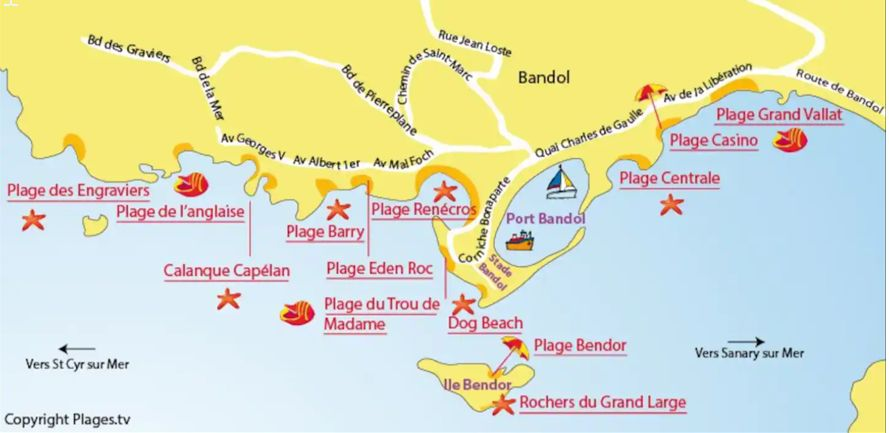

📍 Plan de Bandol

🛒 Commerces & Services
Nombreux commerces : fruits, pressings, pharmacies, boucheries, boulangeries artisanales, producteurs locaux.
- Intermarché, Carrefour et Super U : 15-20 min à pied, 5 min en voiture
- Gare SNCF: 5 minutes
- Autoroute A50 (Sortie 12 Bandol) : 1 km
- Toulon : 15 minutes, Marseille : 1 heure
🏌️ Activités
- Golf de Frégate : 6-7 minutes
- Aqualand Saint-Cyr : Activités nautiques
- Domaines viticoles de Bandol
- Zoo parc de Sanary-sur-Mer
- Circuit Paul Ricard du Castellet
- Marchés de Bandol
- Marchés de Sanary-sur-Mer
- Villages typiques : La Cadière d'Azur, Le Castellet
- Que faire à Bandol... :
🏖️ Plages
À Bandol, Sanary-sur-Mer et Saint-Cyr-sur-Mer : nombreuses plages, activités nautiques, restaurants et commerces de bouche.
